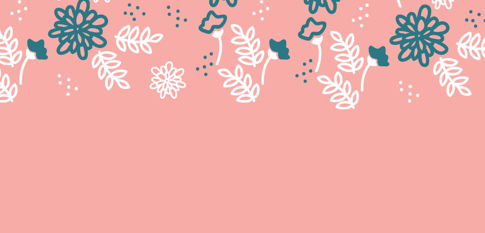
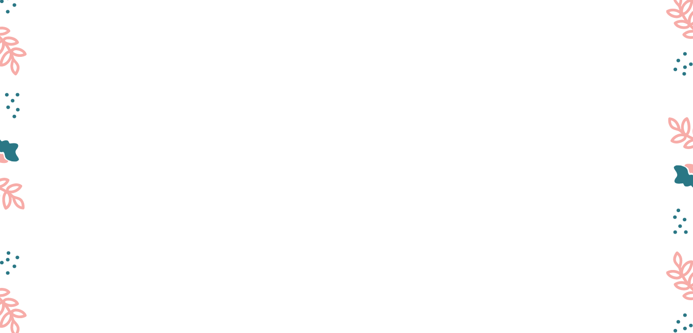
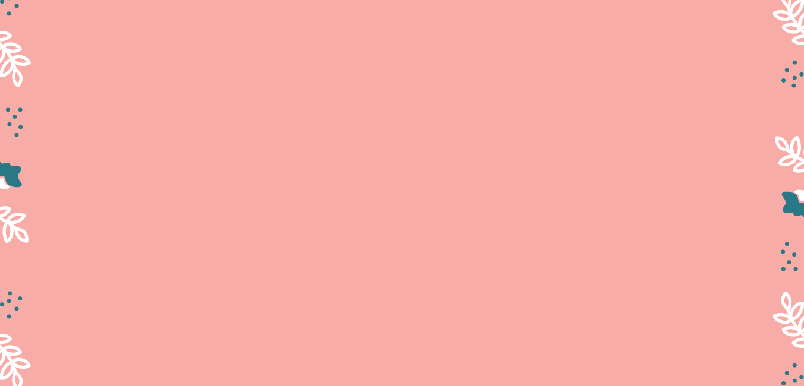
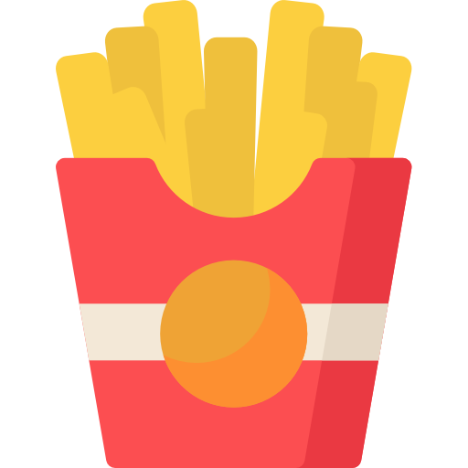

GILLIAN
Mikaela Gillian M. Guzman


My favorite subject so far is CMSC 150 because I understand this subject better than other subjects. Also, I find
pleasure in solving mathematical problems in this class.
My favorite programming language so far is Python because it has the simplest syntax compared to the
other programming languages that I know. It is the easiest to learn and use.


My favorite GE so far is Ethics 1 since I learned a lot of new things in this subject, it helped me become a better person and be open to more beliefs.
My favorite food is anything with potatoes!
